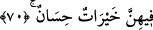

için olduğunu kabul ederler. Böylece fazilet ve üstünlükleri de belirtilmiş oluyor. Biraz
önce de örneği geçtiği gibi. Daha önce hurma konusunda açıklama geçmişti.
İbn Abbâs (r.a.) demiştir ki; cennet hurmasının dalları yeşil zümrüttür. Kökü kırmızı
altın, yaprakları ise cennet ehli için giysidir. Bu giysiden sarıkları ve hulleleri (cennet
elbiseleri) biçilir. Meyvesi kovalar gibi sütten daha beyaz, baldan daha tatlı, kaymaktan
daha yumuşak ve çekirdeksizdir. Her koparıldığında yerine başkası oluverir. Cennet
nehirleri arksız, yataksız akar. Sıcak yerlerin dışında pek bulunmayan nar ağacı
hakkında İbn Abbâs (r.a.)’dan şöyle rivâyet edilmiştir: “Bir nar, cennetten bir dâne ile
döllenir.”
İmâm Ali (r.a.) demiştir ki: “Nar yediğinizde onu ucundaki kulakçığı ile yeyin. Çünkü
o mideyi sırlar. Onun her dânesi müminin içinde bulundukça kalbini nurlandırır ve
şeytanın vesvesesini kırk gün çıkarıp uzaklaştırır.
Bir hadis-i şerifte şöyle buyrulmuştur: “Nar yiyen kimsenin kalbini Allah kırk gün
nurlandırır.”[184] Nar dânelerinin toplu haldeki güzelliği aşikardır. En güzeli de iri ve
çok tatlı olanıdır. Nar, göğsü ve boğazı yumuşatan, mideyi kuvvetlendiren, hafakana
karşı faydalı, cinsî gücü arttıran, kabuğundan haşerelerin kaçtığı bir meyvedir.
et-Te’vilâtü’n-Necmiyye’de denilmiştir ki; bu âyet-i kerîme, ashâb-ı yemînin
mukarrebîn’e göre kabiliyet bakımından zayıf olduklarına işâret eder. Çünkü nar ilaç
içindir, meyve olarak faydalanmak için değildir. Evde ilaç hazırlamak sâkinlerin
mîzâcının zayıf olduğunu gösterir.
69. Öyleyken Rabbinizin hangi nimetlerini yalanlayabilirsiniz?
“Öyleyken” size meyvelerden lezzet alarak faydalanacağınız nimetler hazırladığı
halde “Rabbinizin nimetlerinden hangisini yalanlayabilirsiniz?”
70. İçlerinde huyu güzel yüzü güzel kadınlar vardır.
Bundan önce geçen cümle gibi bu da iki cennetin diğer bir tavsîfidir. Huyu güzel, yüzü
güzel anlamına alınan “hayrât” kelimesinin tefsirinde, o kadınlar pis ve çirkin kokulu
değillerdir. Ne diyecek diye kimsenin ağzına da bakıp durmazlar, denmiştir. Araplar,
“Ağzına bakıp ne diyeceğini takip etmeyene mutluluk versin” derler. O kadınlar,
kocalarından başkası için süslenmezler. Şuna, buna dil uzatmazlar. Gözlerini yükseklere
dikmezler ve eşlerinden kaçmazlar. Yerli yersiz yollarda dolaşmazlar. Her bakımdan